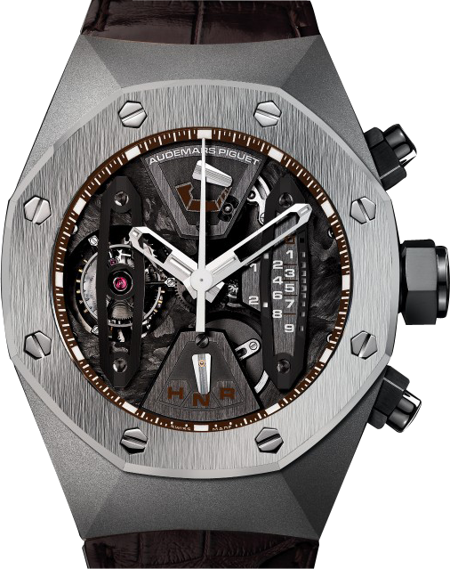
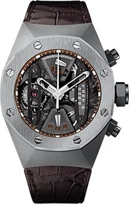
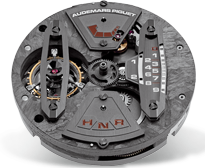
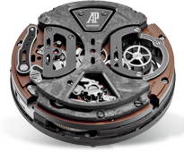
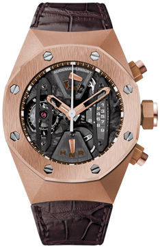
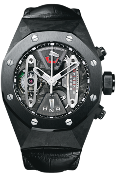
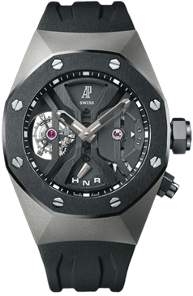

首页
关于伊森
木制表
腕表动态
联系伊森
售后维修
伊森主页 > 木质表 > 男装腕表 > 皇家橡树系列
皇家橡树概念系列 陀飞轮计时码表
手动上链腕表，搭载陀飞轮。钛金表壳。机芯机板充当表盘，搭配棕色显示装置和白金指针。手工缝制 方形大鳞片棕色鳄鱼皮表带。

表壳
钛金属表壳，防眩光处理蓝宝石水晶表镜和底盖，螺丝锁紧式表 冠， 防水深度达100米。
表壳的宽度
44.00MM
表壳的宽度
44.00MM
表壳的宽度
44.00MM
机械装置
我们的手动上链腕表特以其可靠性而名闻遐迩。
手动上链
表盘
钛金属表壳，防眩光处理蓝宝石水晶表镜和底盖，螺丝锁紧式表 冠， 防水深度达100米。
表带
钛金属表壳，防眩光处理蓝宝石水晶表镜和底盖，螺丝锁紧式表 冠， 防水深度达100米。
复杂功能
+ 陀飞轮
+ 计时码表

皇家橡树概念系列 陀飞轮计时码表 技术特色
机芯型号
2941 表厂机芯手动上链

正面

底盖
下载使用手册（PDF版）
直径总长
34.60 mm (15 ¼ 系列)
摆轮频率
3 赫兹 (21,600 次/小时)
宝石数目
34
机芯型号
2941 表厂机芯手动上链
动力储存
237h
零件数目
393
功能
陀飞轮, 搭配中央秒针的直线形计时器计时码 表, 动力储存显示, 选择显示器, 小时, 分钟
返回顶部
更多Royal Oak Concept皇家橡树概念
+ 探索所有的腕表
<
>



专卖店参观
零售店 >